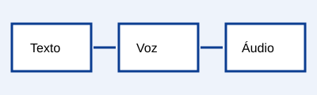

Tecnologia assistiva
Tecnologia assistiva reúne recursos que dão mais autonomia a pessoas com deficiência. Vai de uma bengala a sistemas de computador complexos.
Exemplos para o computador e o celular
- Leitores de tela: transformam o texto em voz. Exemplos: NVDA (gratuito, Windows), Orca (gratuito, Linux), JAWS (pago) e VoiceOver (Apple).
- Linha Braille: mostra o texto da tela em Braille. Ajuda pessoas com surdocegueira.
- Ampliadores de tela: aumentam parte da tela ou toda ela, para pessoas com baixa visão.
- Teclados e mouses adaptados: teclado virtual, acionadores, mouse de sopro e mouse ocular.
Um limite importante
Esses recursos não garantem acesso por si sós. A página precisa ser projetada de forma acessível.
